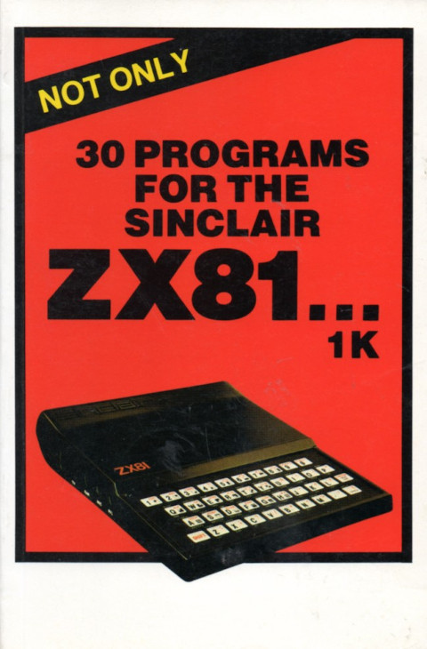

risorse | draughts 1K
Ho recentemente acquistato una ristampa del libro “Not Only 30 Programs for the Sinclair ZX81… 1K”. Al suo interno ho trovato una versione semplificata del gioco della dama in cui la strategia attuata dal calcolatore è realizzata in linguaggio macchina. Purtroppo viene però fornito solo il codice binario, senza alcun commento a corredo. L'assenza di dettagli viene così giustificata:
Unfortunately it is beyond the scope of this book to give an explanation of how this particular machine language program works, or how to write improvements for it. […] this information can be found in our book "MACHINE LANGUAGE PROGRAMMING MADE SIMPLE". That book also includes a full description of this Draughts program. Price and ordering details are at the back of this book.
Considerando la brevità della routine, ho deciso di disassemblarla e analizzarla del dettaglio.
La copertina del libro
La versione della dama presentata non consente prese multiple. Le prese non sono obbligatorie. Una volta giunta all'ultima traversa una pedina non si trasforma in dama ma in re: un re procede in senso inverso rispetto a una pedina. Una pedina così come un re può catturare indifferentemente una pedina o un re avversario. Non è specificato cosa accade a un re che raggiunge l'ultima traversa: a giudicare dall'implementazione, non si muove più.
Le pedine sono rappresentate dalle lettere W e B rispettivamente per il bianco e il nero. I re sono rappresentati dalle stesse lettere in campo inverso.
; La scacchiera è memorizzata nel DISPLAY FILE:
;
; 1B B B B␊
; B B B B ␊
; 3B B B B␊
; █ █ █ █ ␊
; 5█ █ █ █␊
; W W W W ␊
; 7W W W W␊
; W W W W ␊
;
; Nella prima colonna si riconoscono gli indici dispari delle righe.
; Mancano del tutto i riferimenti alle colonne: la documentazione a corredo
; del listato spiega che la prima colonna a sinistra è identificata dalla
; lettera A, l'ultima a destra dalla H.
;
; I simboli utilizzati sono:
;
; █ = 00
; B = 27 (a7 in campo inverso)
; W = 3c (bc in campo inverso)
;
; Le variabili di sistema utilizzate dalla routine sono:
;
; PRBUFF = 403c
; D_FILE = 400c
;
; Il buffer di stampa ospita cinque variabili utilizzate per determinare la
; migliore tra le mosse valide. Ogni casella è individuata dall'indirizzo che
; occupa nel DISPLAY FILE. Le variabili SAFE_ORG e SAFE_DST rappresentano
; rispettivamente la casella di partenza e di arrivo dell'ultima mossa sicura
; trovata, mentre le variabili CAPT_ORG, CAPT_DST e CAPT_MID contengono la
; casella di partenza, arrivo e mediana dell'ultima mossa di cattura trovata.
;
; PRBUFF 403c SAFE_ORG
; 403d
; 403e SAFE_DST
; 403f
; 4040 CAPT_ORG
; 4041
; 4042 CAPT_DST
; 4043
; 4044 CAPT_MID
; 4045
;
; Segue il punto d'ingresso della routine:
;
4082 af xor a
4083 21 3c 40 ld hl,PRBUFF ; azzera tutte le variabili
4086 06 0a ld b,0x0a
4088 77 INIT ld (hl),a
4089 23 inc hl
408a 10 fc djnz INIT
;
; Inizia la scansione della scacchiera alla ricerca delle pedine/re
; neri per valutare, per ognuno di essi, le mosse valide.
;
408c 06 48 ld b,0x48 ; inizia la scansione
408e 2a 0c 40 ld hl,(D_FILE) ; dell'intera scacchiera
4091 e5 push hl
4092 7e SCAN ld a,(hl)
4093 fe a7 cp 0xa7 ; è una B in campo inverso?
4095 28 12 jr z,B_KING ; se sì è un re nero
4097 fe 27 cp 0x27 ; è una B normale?
4099 20 1a jr nz,NEXT ; se no si passa oltre
;
; Per le pedine nere si valutano le mosse verso la traversa 8, cioé verso le
; caselle che distano +8 e +10 rispetto alla casella occupata dalla pedina
; (tenere presente che ogni riga della scacchiera sul DISPLAY FILE occupa 9
; caratteri, gli 8 della traversa della scacchiera più il LINE FEED finale):
;
; | | | |
; --+---+---+---+--
; | | | |
; --+---+---+---+--
; | | B | |
; --+---+---+---+--
; | +8| |+10|
; --+---+---+---+--
; | | | |
;
409b 11 08 00 ld de,0x0008 ; altrimenti è una pedina
409e cd f1 40 call EVAL ; valuta mossa a sud-ovest
40a1 11 0a 00 ld de,0x000a
40a4 cd f1 40 call EVAL ; valuta mossa a sud-est
40a7 18 0c jr NEXT
;
; Per i re neri vanno considerate le mosse verso la traversa 1, cioé verso le
; caselle che distano -10 e -8 rispetto alla casella occupata dal re in esame:
;
; | | | |
; --+---+---+---+--
; |-10| | -8|
; --+---+---+---+--
; | | B | |
; --+---+---+---+--
; | | | |
; --+---+---+---+--
; | | | |
;
40a9 11 f6 ff B_KING ld de,0xfff6 ; è un re
40ac cd f1 40 call EVAL ; valuta mossa nord-ovest
40af 11 f8 ff ld de,0xfff8
40b2 cd f1 40 call EVAL ; valuta mossa a nord-est
40b5 23 NEXT inc hl
40b6 10 da djnz SCAN
;
; Selezione della mossa migliore.
;
40b8 11 3c 40 MOVE ld de,SAFE_ORG
40bb 21 43 40 ld hl,CAPT_DST+1
40be 34 inc (hl)
40bf 35 dec (hl) ; è stata trovata una mossa
40c0 01 04 00 ld bc,0x0004 ; di cattura?
40c3 20 02 jr nz,CAPT_FOUND
40c5 0e 00 ld c,0x00 ; se sì copia CAPT in SAFE
40c7 d5 CAPT_FOUND push de
40c8 d5 push de
40c9 e1 pop hl
40ca 09 add hl,bc ; hl = SAFE_ORG o CAPT_ORG
40cb 0e 04 ld c,0x04
40cd ed b0 ldir ; hl = CAPT_ORG o CAPT_MID
;
; Esecuzione della mossa selezionata.
;
40cf cd 2c 41 call READ_VAR ; elimina la pedina
40d2 36 08 ld (hl),0x08 ; catturata (se esiste)
40d4 e1 pop hl ; hl = SAFE_ORG
40d5 cd 2c 41 call READ_VAR ; svuota la casella di
40d8 7e ld a,(hl) ; origine ma ricordane il
40d9 36 08 ld (hl),0x08 ; contenuto
40db 13 inc de
40dc eb ex de,hl ; hl = SAFE_DST
40dd cd 2c 41 call READ_VAR
40e0 d1 pop de ; de = SAFE_ORG
40e1 01 3f 00 ld bc,0x003f
40e4 eb ex de,hl
40e5 09 add hl,bc ; hl = SAFE_ORG
40e6 eb ex de,hl ; de = SAFE_DST + 3f
40e7 e5 push hl
40e8 ed 52 sbc hl,de ; la casella di arrivo si
40ea e1 pop hl ; trova sull'ultima riga?
40eb 38 02 jr c,MAKE_MOVE ; se no, prosegui...
40ed f6 80 or 0x80 ; promuovi la pedina a re
40ef 77 MAKE_MOVE ld (hl),a ; effettua la mossa
40f0 c9 ret
;
; Valutazione di una mossa.
;
; Inizializza le variabili SAFE_ORG/SAFE_DST se la mossa è sicura, cioé se
; la casella di destinazione è libera e quella successiva non contiene una
; pedina o re bianco; una mossa non sicura viene accettata se non è stata
; precedentemente individuata una mossa sicura.
;
; Se la casella di destinazione contiene una pedina o un re bianco e quella
; successiva è vuota allora si tratta di una mossa di cattura e viene perciò
; salvata nelle variabili CAPT_ORG/CAPT_DST/CAPT_MID.
;
; Input:
; hl = indirizzo della casella di partenza
; de = distanza della casella di arrivo rispetto a quella di partenza
; Output:
; -
; Effetti collaterali:
; aggiornamento delle variabili *_ORG e *_DST
;
40f1 e5 EVAL push hl ; determina il contenuto
40f2 19 add hl,de ; della casella di arrivo
40f3 7e ld a,(hl)
40f4 fe 08 cp 0x08 ; è libera?
40f6 20 12 jr nz,NOT_EMPTY ; no, verifica cosa contiene
40f8 e5 push hl ; altrimenti controlla cosa
40f9 19 add hl,de ; c'è nella casella che segue
40fa 7e ld a,(hl)
40fb e6 7f and 0x7f ; la casella è occupata da
40fd fe 3c cp 0x3c ; una pedina o una re bianco?
40ff 28 22 jr z,PICK_BEST ; se sì, accetta la mossa solo
; se non è già stata trovata una
; mossa sicura
4101 e1 SAVE_MOVE pop hl ; altrimenti salva la mossa
4102 22 3e 40 ld (SAFE_DST),hl
4105 e1 pop hl
4106 22 3c 40 ld (SAFE_ORG),hl
4109 c9 ret
410a e6 7f NOT_EMPTY and 0x7f ; la casella è occupata da
410c fe 3c cp 0x3c ; una pedina o un re bianco?
410e 20 1a jr nz,END2 ; se no termina l'analisi
4110 e5 push hl
4111 19 add hl,de ; controlla cosa c'è nella
4112 7e ld a,(hl) ; casella che segue...
4113 fe 08 cp 0x08
4115 20 12 jr nz,END1 ; se non è vuota termina,
4117 22 42 40 ld (CAPT_DST),hl ; altrimenti registra la
411a e1 pop hl ; mossa di cattura trovata
411b 22 44 40 ld (CAPT_MID),hl
411e e1 pop hl
411f 22 40 40 ld (CAPT_ORG),hl
4122 c9 ret
4123 3a 3f 40 PICK_BEST ld a,(SAFE_DST+1) ; verifica se SAFE_DST
4126 a7 and a ; è stata inizializzata;
4127 28 d8 jr z,SAVE_MOVE ; se no salva questa mossa
4129 e1 END1 pop hl ; altrimenti mantieni quella
412a e1 END2 pop hl ; trovata in precedenza
412b c9 ret
;
; Lettura della mossa.
;
; Input:
; hl = indirizzo della variabile da leggere
; Output:
; de = valore d'ingresso di hl + 1
; hl = contenuto dalla variabile puntata
;
412c 5e READ_VAR ld e,(hl)
412d 23 inc hl
412e 56 ld d,(hl)
412f eb ex de,hl
4130 c9 ret
Manca la componente casuale: il comportamento del programma è deterministico.
La continua sovrascrittura delle variabili SAFE_*/CAPT_* da parte della sub-routine EVAL fa intuire che il programma predilige muovere le pedine più avanzate.
La definizione di mossa sicura è piuttosto debole perché considera solo la presenza di una pedina avversaria nella casella che si trova lungo la direzione in cui si muove la pedina nera, non le altre caselle adiacenti a quella di arrivo:
; 1B B B B␊ ; B B B B ␊ ; 3B B █ B␊ ; █ █ B █ ␊ ; 5█ █ █ W␊ ; W W W █ ␊ ; 7W W W W␊ ; W W W W ␊
Nella disposizione sopra riportata il programma considera la mossa E4-F5 sicura perché la casella G6 è libera, nonostante la casella F5 sia attaccata dalla pedina bianca in E6. La riprova si ha pre-caricando questa configurazione nel listato BASIC. Una volta lanciato il programma e impostato la mossa A6-B5 per il bianco il nero, pur disponendo di diverse mosse sicure, muove come previsto:
; 1B B B B␊ ; B B B B ␊ ; 3B B █ B␊ ; █ █ █ █ ␊ ; 5W █ B W␊ ; █ W W █ ␊ ; 7W W W W␊ ; W W W W ␊
File per l'uso con emulatore: draughts.z81.
[Aggiornamento 24/04/2022]
In rete sono disponibili le scansioni del libro “Machine Language Programming Made Simple” (cfr. link a Archive.org). La descrizione del programma si trova a partire da pagina 147.
Pagina modificata il 24/04/2022